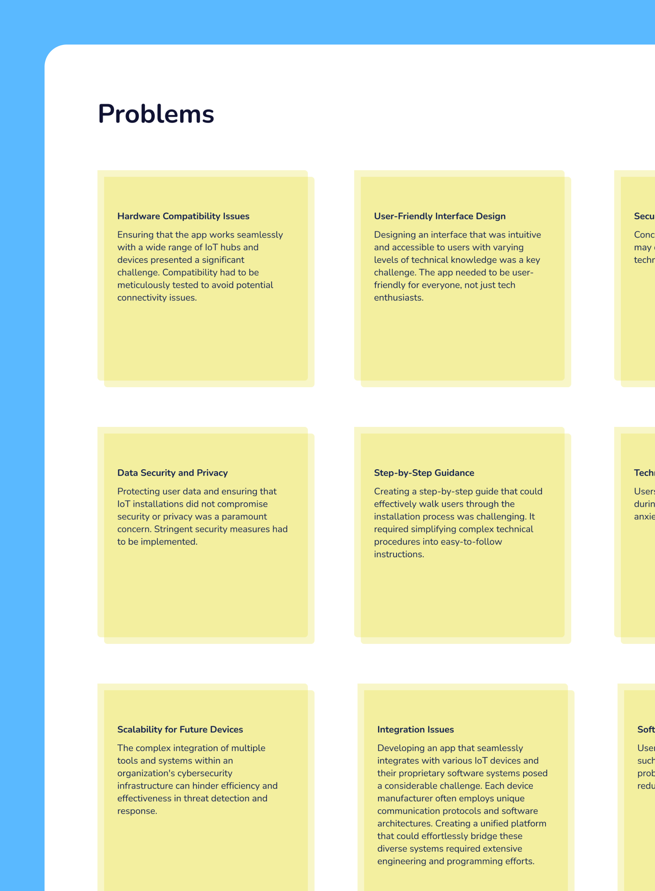
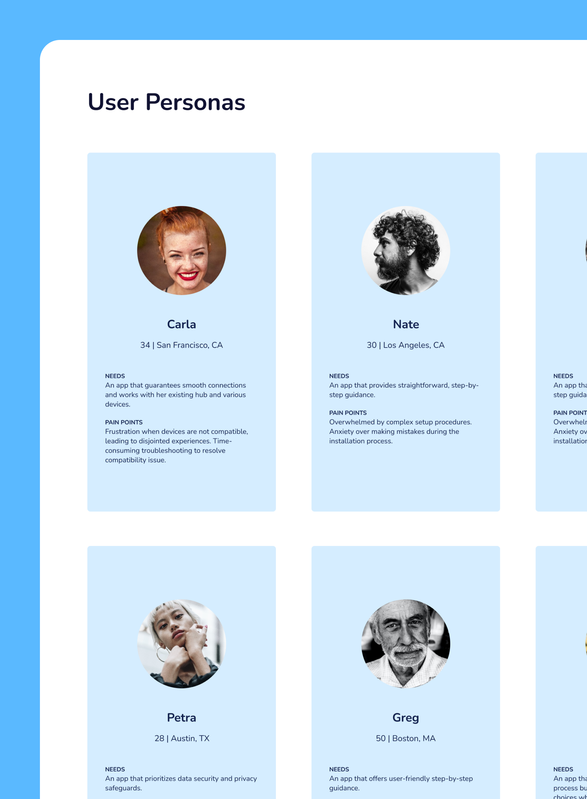
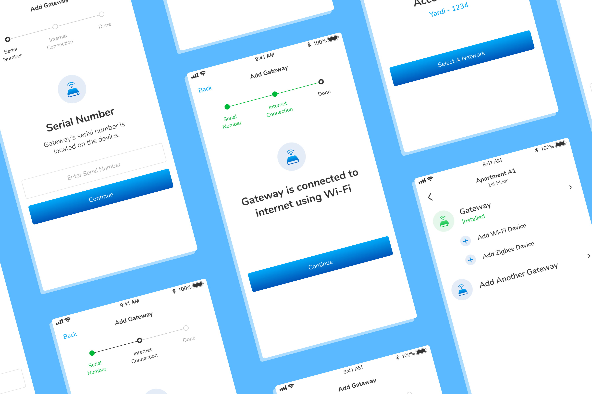
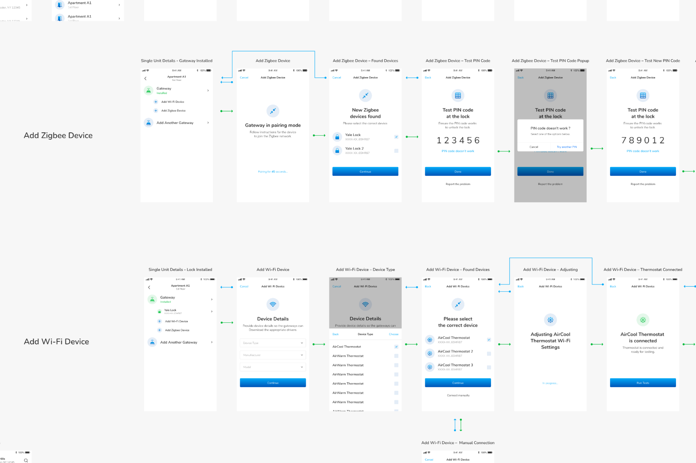
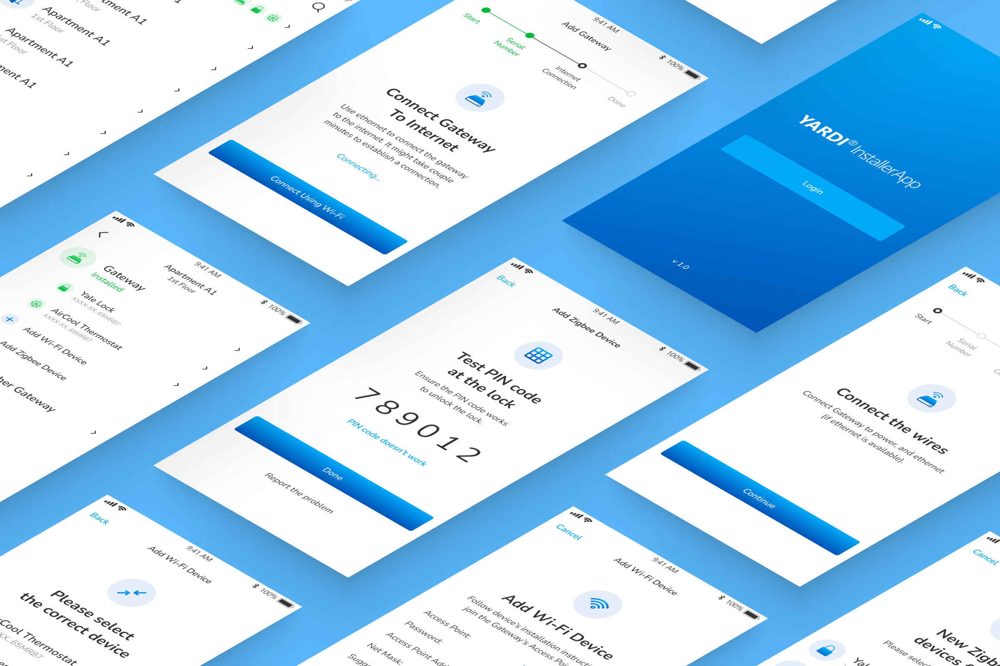

Revolutionizing the internet of things installation experience.
In the vast world of the Internet of Things (IoT), setting up devices used to be a tricky task. Yardi IoT has changed that. It's an app that makes IoT setup easy for everyone, no matter how tech-savvy they are.

MY ROLE
Wireframes
Prototyping
UI/UX Design
COMPANY
yardi
The path to creating yardi installer.
Creating Yardi Installer was not without its hurdles. We
encountered and overcame a series of complex challenges to make
the IoT installation process simple and accessible.
From ensuring compatibility with diverse devices to prioritizing user-friendly design, addressing data security and privacy, crafting step-by-step guidance, and planning for future scalability, the journey to Yardi Installer's success was marked by innovative solutions to these pivotal obstacles.
From ensuring compatibility with diverse devices to prioritizing user-friendly design, addressing data security and privacy, crafting step-by-step guidance, and planning for future scalability, the journey to Yardi Installer's success was marked by innovative solutions to these pivotal obstacles.


Simple and easy hub setup installation for everyone.
One of the app’s goals was to simplify the setup of IoT hubs.
Users could connect their hub using a cellular or ethernet
connection with minimal hassle.
By providing clear, step-by-step guidance, it made the entire installation process accessible to individuals with varying levels of technical expertise.
Whether they were an IoT novice or a seasoned user, the app ensured that anyone could set up a hub with ease.
By providing clear, step-by-step guidance, it made the entire installation process accessible to individuals with varying levels of technical expertise.
Whether they were an IoT novice or a seasoned user, the app ensured that anyone could set up a hub with ease.

A simplified device connection journey.
A key objective and the main goal of the app was to simplify the
process of connecting Zigbee and Wi-Fi devices. Users can connect
their devices with total ease, even if they're not tech wizards.
There’s no need for any fancy technical know-how, just simple and
straightforward connections for everyone.

Simple and intuitive user interface.
The mobile app boasts a user-friendly interface that's been
purposefully designed for simplicity and ease of use. It's
intuitive, making it a breeze to navigate, even for those new to
IoT technology.
With clear icons and straightforward menus, users can quickly learn and understand the app, ensuring that the process of setting up IoT devices is a smooth and accessible experience for all.
With clear icons and straightforward menus, users can quickly learn and understand the app, ensuring that the process of setting up IoT devices is a smooth and accessible experience for all.

FINAL THOUGHTS
With a simplified hub setup, wide device compatibility, and effortless device connection, the app has made IoT accessible to a broader audience. Users no longer need to be tech-savvy to install and connect IoT devices. This has not only saved time but also made IoT technology more inclusive.As the IoT landscape continues to expand, Yardi Installer is poised to play a crucial role in making this technology accessible to all.
Installation Time
50%
reduction in the time required for IoT hub installation,
making the process quicker and more efficient.
Compatibility Satisfaction
92%
of users expressed high satisfaction with the app's extensive
device compatibility, highlighting its ability to support a
wide range of IoT devices.
Customer Support
95%
of user inquiries were resolved within 24 hours, underlining
the commitment to providing assistance and enhancing the user
experience.
User satisfaction
86%
decrease in user-reported installation-related frustrations,
proving that simplicity and ease of use can significantly
enhance the user experience.
Other projects worth checking out


Music, management,
Hellodemo allows record label managers and artists to send
music, manage labels, sign artists, check new releases, reply
to artists, and much more.
Lean more


Revolutionizing interior
Selecttio serves a crucial niche in the design industry. Their
clients are interior designers and architects who require a
vast array of materials, for their projects.
Lean more
Music, management,
and collaboration.
Hellodemo allows record label managers and artists to send
music, manage labels, sign artists, check new releases, reply
to artists, and much more.
Lean more
Revolutionizing interior
design procurement.
Selecttio serves a crucial niche in the design industry. Their
clients are interior designers and architects who require a
vast array of materials, for their projects.
Lean more